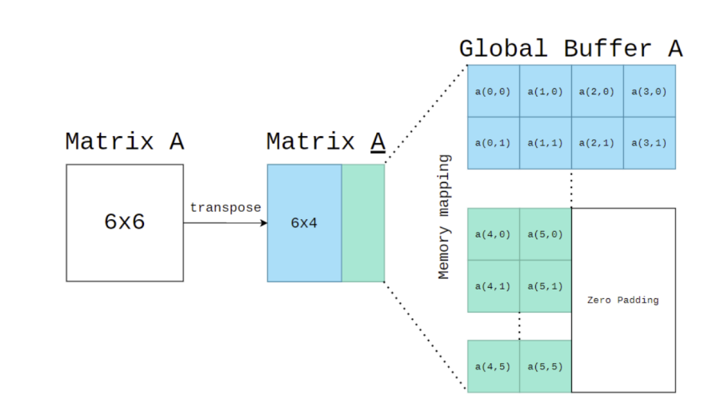

Lab3: Systolic array#
Goals of this lab#
Introduction#
The systolic array used by Google Tensor Processing Unit (TPU) accelerates the matrix computation by using the dataflow operation. The systolic array contains multiple processing elements (PEs), each of them is responsible for the multiply–and-accumulate (MAC) operation. Unlike the scalar CPU, the systolic array can performs multiple elements in a matrix simultaneously and achieves high computational throughput. Furthermore, the dataflow computing used by the systolic array stores the reused data within the register of each PE and decreases the amount of data movement between on-chip and off-chip memory.
In this Lab, we will use Verilog to implement the PE and a small systolic array composed of 4 x 4 PEs. In addition, there is a lab that will ask students to realize the dataflow stationary policy (weight and output stationary) on the systolic array to perform matrix multiply often used in AI models. (Hint: The weight stationary is more complicated than output stationary.)
Output Stationary
Weight Stationary
Intended Learning Outcomes#
Understand the systolic array architecture and the dataflow used by the systolic array
Using the Verilog Programming to implement processing element (PE), and a 4 x 4 systolic array composed of the dataflow processing
Background#
The Google TPU uses 256 x 256 PE array to create a highly parallel computing with 8-bit integer data type. The TPU outperforms current GPU and CPU. It mainly accelerate the Matrix Multiply, so we will need to implement the matrix multiply algorithm by using the systolic dataflow.
Let review the Matrix Multiply learning from senior high school. For three matrix A(M,K), B(K,N) and C(M,N),that is, C = A ∗ B, Here is the pseudo of MM algorithm that you already know.
for(int k = 0; k < K; k++) {
for(int m = 0; m < M; m++) {
for(int n = 0; n < N; n++) {
C[m, n] += A[m, k] * B[k, n];
}
}
}
Code 1: Matrix Multiplication in Weight Stationary
This particular dataflow is called a Weight-stationary dataflow, since the weight element remain constant until the next row to be computed
Systolic Array Implementation#
The goals of this lab are to familiarize you with the concepts of dataflows in systolic array architectures. This will get you hand-on experience with dataflow routing and processing elements implementations. In this lab, you only need to construct the TPU module.
Prerequisite#
Python3 with numpy library installed
iverilog or ncverilog or vivado
Makefile
Requirements#
You need to perform Matrix multiplication with one of dataflow stationary method with correct functional simulation in 4x4 Processing elements(PEs). That is this design can perform (4*K)*(K*4) 8-bit integer matrix multiplication.
Your design should be written in the Verilog language. There is no limitation in how you program your design.
Your PEs shouldn’t more than 4x4, where a 2D systolic array architecture is recommended.
An 8-bits input data, 32-bits accumulated data design. Please be careful with the bit-width problem.
(1024 + 256 ∗ 2) KiBytes in total of global buffer size.
Getting Started#
This lab will require a beginner’s level of verilog.
Hint
git clone https://github.com/nycu-caslab/AAML2023-Lab3.git
Interface#
Tabel 1: The control signals
I/O |
Signal name |
Bit width |
Description |
|---|---|---|---|
Input |
clk |
1 |
The clock signal |
Input |
rst_n |
1 |
The reset signal, which is active low. |
Input |
in_valid |
1 |
The input is valid when in_valid is high and will only high for one cycle. |
Input |
K |
8 |
dimension K of the matrix (M,K), (K,N) |
Input |
M |
8 |
dimension K of the matrix (M,K), (K,N) |
Input |
N |
8 |
dimension K of the matrix (M,K), (K,N) |
Output |
busy |
1 |
High when the design is busy. Pattern will check your answer when busy is low after every in_valid. |
Tabel 2: The SRAM interface of A and B SRAM
I/O |
Signal name |
Bit width |
Description |
|---|---|---|---|
Input |
wr_en |
1 |
The write enable signal. |
Input |
index |
16 |
The address of the sram to be read or write. |
Input |
data_in |
32 |
The data input to write to the SRAM |
Output |
data_out |
32 |
The data output from the SRAM |
Tabel 3: The SRAM interface of C SRAM
I/O |
Signal name |
Bit width |
Description |
|---|---|---|---|
Input |
wr_en |
1 |
The write enable signal. |
Input |
index |
16 |
The address of the sram to be read or write. |
Input |
data_in |
128 |
The data input to write to the SRAM |
Output |
data_out |
128 |
The data output from the SRAM |
Specification#
Module Specification#
Top module: TPU (filename: TPU.V)
Input Pins: clk, rst_n, in_valid, K, M, N
Output Pins: busy, [ABC]_wr_en, [ABC]_index, [ABC]_data_in, [ABC]_data_out
Rules#
Your TPU design should be under the top module which provided by TA.
Pattern module includes three global buffers prepared for your TPU. Two of the global buffers have its own read write port, 256x256x32bit=256 KiBytes size and the final one for you to write back the data has 256x256x128bit=1024 KiBytes. For the detail of the mapping of matrix into global buffer. Please refer to the Appendix . There are two types of mapping. Type A for matrix A, and Type B for matrix B and C.
At the start of the simulation, testbench will load the global buffer A & B, which assume that CPU or DMA has already prepared the data for TPU in global buffer. When signal in_valid==1, the size of the two matrices will be available for TPU (m, n, k) for only one cycle.
Testbench will compare your output global buffer with golden, when you finish the calculation, that is (busy==0). Then you need to wait for the next in_valid for the next test case.
You should implement your own data loader, process elements(PEs), and controller which schedule the data in global buffer A & B to be calculated in the systolic array.
You need to set busy to high immediately after in_valid fall from high to low.
Cannot modify the name of input or output port.
Use asynchronous reset active low architecture
All your output register should set to zero after reset.
The execution latency is limited in 1500000 cycles.
Don’ t write Chinese comments or other language comments in the file you turned in.
Don’t use any wire/reg/submodule/parameter name called error, *congratulation*, *latch* or *fail* otherwise you will fail the lab. Note: * means any char in front of or behind the word. e.g: error_note is forbidden
Basic Lab 1 Exercise -20%#
Objective:
Designs of dataflow in TPU
Data reuse method
Input:
A matrix and B matrix which size are 2*2
control signal(datail in table1,2,3)
Output:
the 2*2 C matrix of A matrix * B matrix
Steps:
take data from global buffer
use the data from global buffer to calculate with PEs
output the result to C global buffer
make verif1 10 test cases of A(2*2) * B(2*2)
Validation
type this in command line
Hint
nWave &
check the waveform with nWave, and the waveform will be like this
Basic Lab 2 Exercise -20%#
input:
A matrix and B matrix which size are 4*4
control signal(datail in table1,2,3)
output:
the 4*4 C matrix of A matrix * B matrix
steps:
refer to Basic Lab1
make verif2 10 test cases of A(4*4) * B(4*4)
Basic Lab 3 Exercise -30%#
input:
A matrix and B matrix which size are 4*K and K*4 separately
control signal(datail in table1,2,3)
output:
the 4*4 C matrix of A matrix * B matrix
steps:
refer to Basic Lab1
make verif3 10 test cases of A(4*K) * B(K*4)
Advanced Lab 1 Exercise -30%#
input:
A matrix and B matrix which size are M*K and K*N separately
control signal(datail in table1,2,3)
output:
the M*N C matrix of A matrix * B matrix
steps:
refer to Basic Lab1
make real 100 test cases of A(M*K) * B(K*N), where M, K, N ∈ [4, 256)
Hint
Hint : you can take data and calculate at the same time or you will exceed cycles
Block digram#

Figure 1: Top Architecture
Example-Waveform#

Figure 2: The example of input waveform
Appendix#
Memory Mapping - Type A(with transpose)#
Figure 3: Matrix mapping type A
Memory Mapping - Type B (without transpose)#

Figure 4: Matrix mapping type B